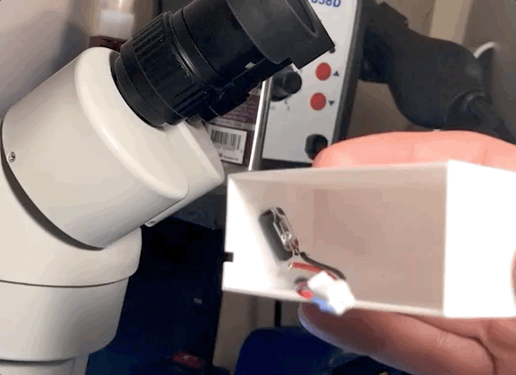
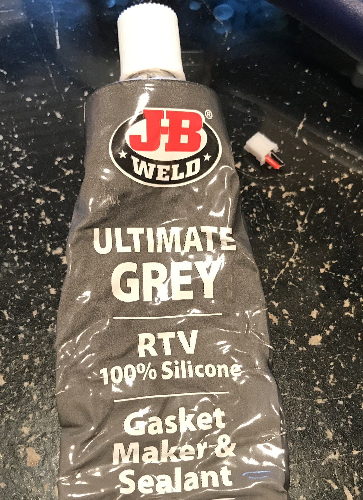
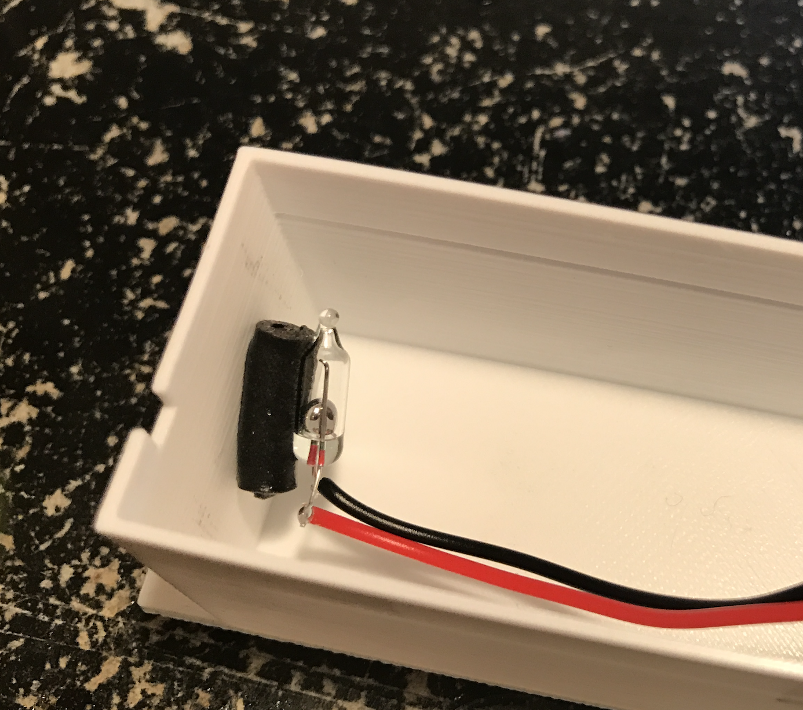
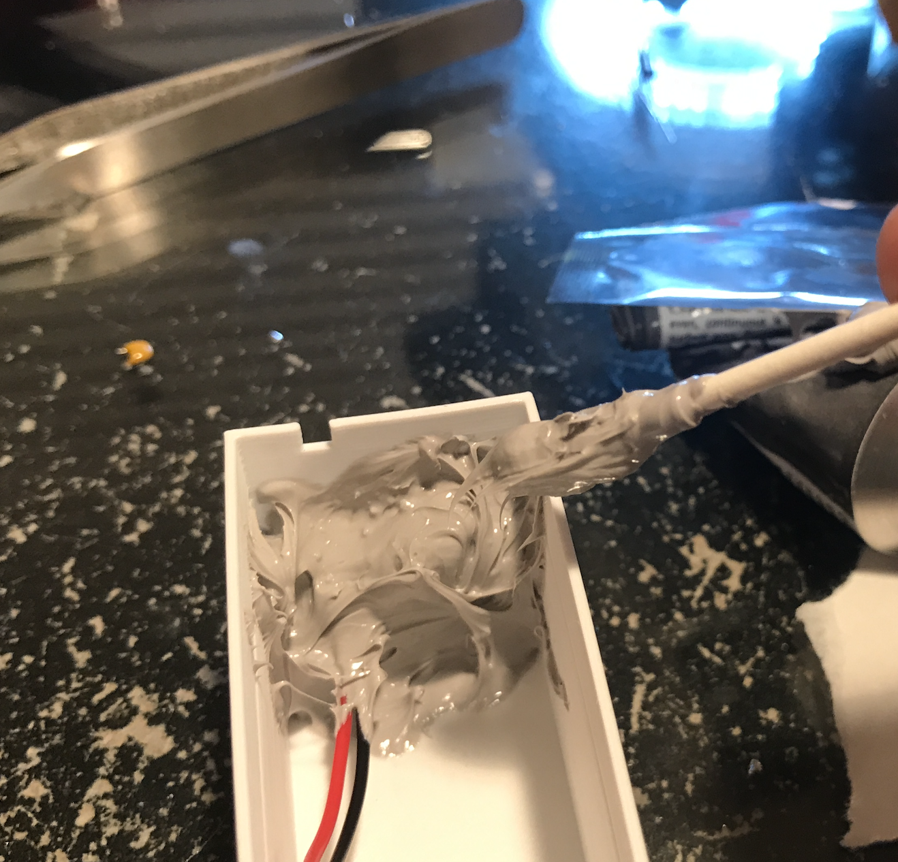
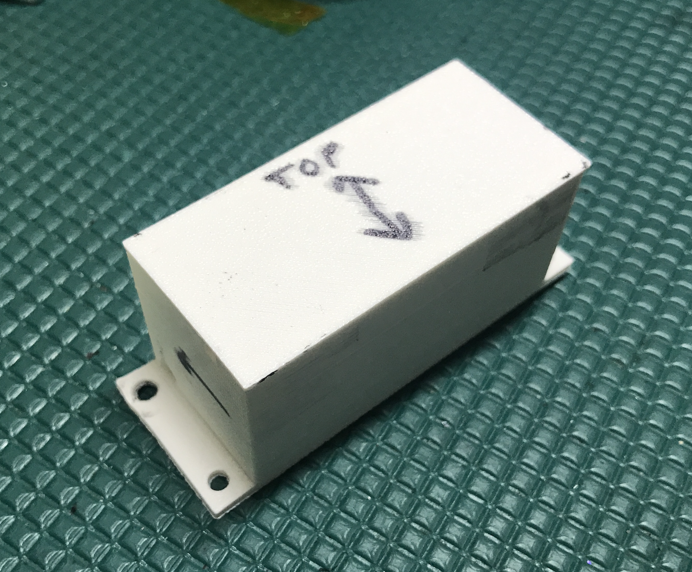
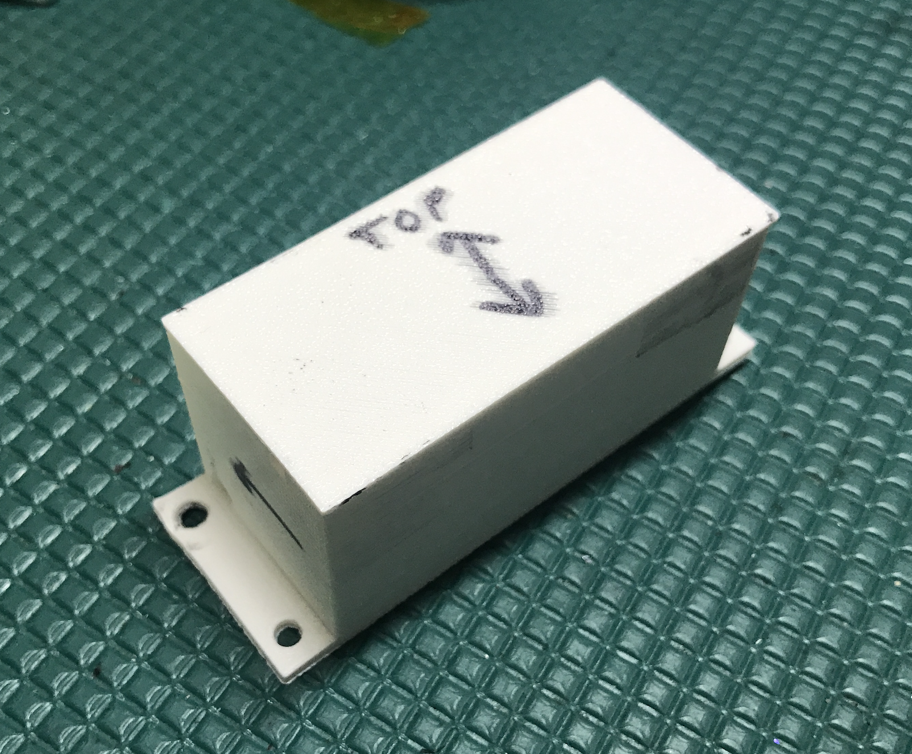
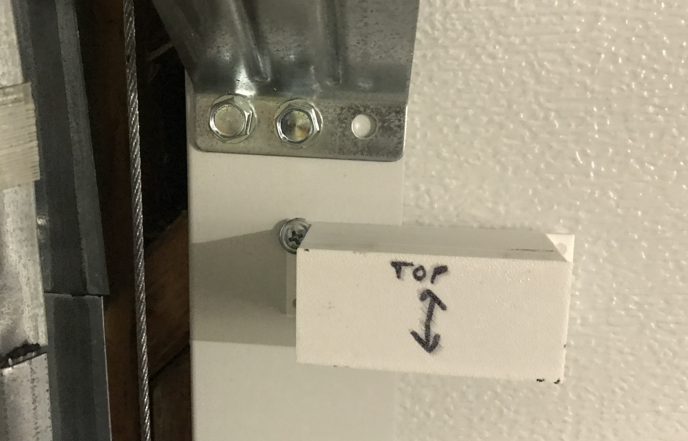

Garage Door Monitor¶

Ever have that feeling that you left the garage open? Well you can use trigBoard to monitor and door/window easily, but the garage door can be tricky to interface with a magnetic sensor. Here is an easy way using a tilt sensor (mercury switch) This works so much better, because the garage door does not open/close very smoothly. The shock and vibration of the door will often trigger “double taps”, sending out multiple push notifications.
Warning
Mercury is a hazardous substance! Make sure you are fully aware of the dangers in using a mercury switch: EPA’s Website here and how to clean up here Only do this at your own risk!
Full tutorial:
Parts¶
- The mercury tilt switch I’m using was purchased on eBay:
And that’s pretty much it, I just soldered this to a JST PH2.0mm connector
Install¶
First I made sure I had the mercury switch oriented properly in the enclosure:
In a garage, things get bumped around and smashed, so I decided to fully seal in the switch with RTV, but maybe epoxy would work better:
And you see that I have the mercury switch mounted away from the wall of the enclosure to get full coverage around the switch:
Then just covered it with RTV:
Looks pretty good:
 

Actually was able to use an existing screw and some VHB double sided tape to mount:
Programming¶
None needed - base firmware works perfectly with this, so if you want to get notified when opens or closes, you set that up all through the configurator. And same with if you want to know if left open, just use the timer functionality to check if “still open”.